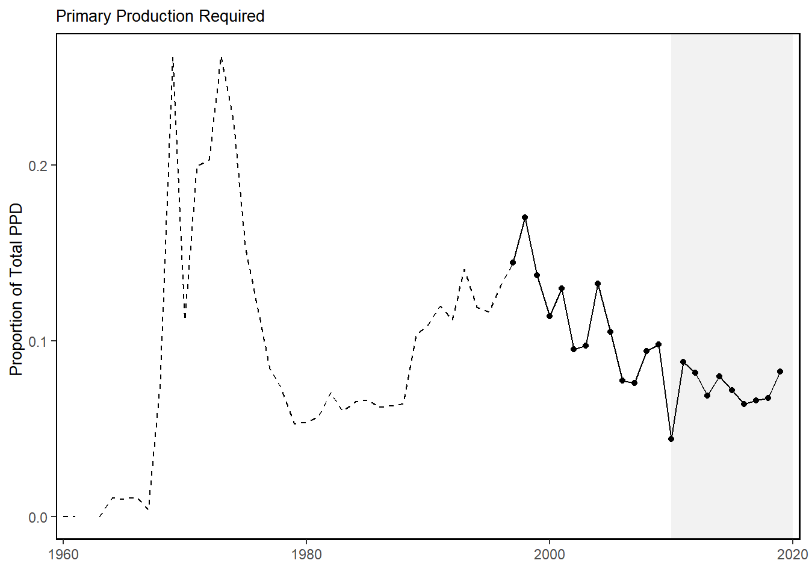
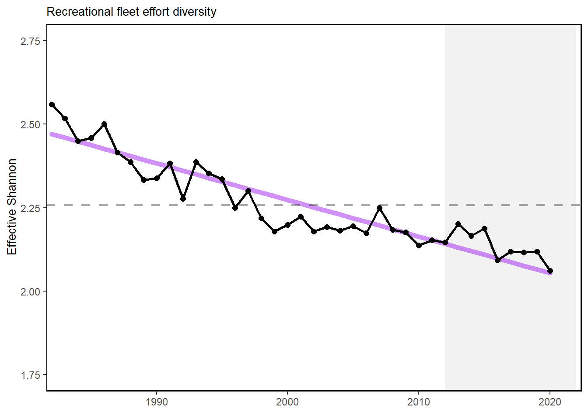
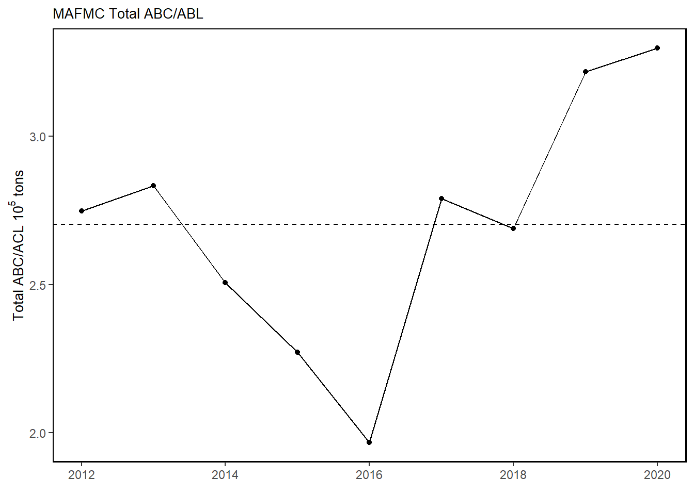

Primary Production Required

Primary production required to support the commercial landings. Included are the top species accounting for 80% of the landings in each year.
Trend lines are shown when slope is significantly different from 0 at the p < 0.05 level. An orange line signifies an overall positive trend, and purple signifies a negative trend. To minimize bias introduced by small sample size, no trend is fit when N < 30. Dashed lines represent mean values of time series unless the indicator is an anomaly, in which case the dashed line is equal to 0. Shaded regions indicate the past ten years. If there are no new data for 2018, the shaded region will still cover this time period.
MAFMC managed species landings (red) and total commercial landings (black) by feeding guild.
![HMS groups include “Bluefin Tuna”, “BAYS”, “Swordfish”, “Large Coastal Sharks”, “Small Coastal Sharks”, “Pelagic Sharks”, “Smoothhound Sharks”. “BAYS” includes bigeye, albacore, yellowfin and skipjack tunas. “Large Coastal Sharks” includes blacktip, bull, great hammerhead, scalloped hammerhead, smooth hammerhead, lemon, nurse, sandbar, silky, spinner, and tiger sharks. “Small Coastal Sharks” includes Atlantic sharpnose, blacknose, bonnethead, finetooth sharks. “Pelagic Sharks” includes blue, porbeagle, shortfin mako, and thresher sharks. “Smoothhound Sharks” includes smooth dogfish shark.](human_dimensions_MAB_files/figure-html/hms-landings-comdat-commercial_landings-1.png)
HMS groups include “Bluefin Tuna”, “BAYS”, “Swordfish”, “Large Coastal Sharks”, “Small Coastal Sharks”, “Pelagic Sharks”, “Smoothhound Sharks”. “BAYS” includes bigeye, albacore, yellowfin and skipjack tunas. “Large Coastal Sharks” includes blacktip, bull, great hammerhead, scalloped hammerhead, smooth hammerhead, lemon, nurse, sandbar, silky, spinner, and tiger sharks. “Small Coastal Sharks” includes Atlantic sharpnose, blacknose, bonnethead, finetooth sharks. “Pelagic Sharks” includes blue, porbeagle, shortfin mako, and thresher sharks. “Smoothhound Sharks” includes smooth dogfish shark.

Total commercial seafood landings (black) shown with Mid-Atlantic managed seafood landings (red).
Revenue change from the 2015 values in dollars (black), Price (PI), and Volume Indicators (VI) for commercial landings in the Mid-Atlantic Bight.
Revenue change from the 2015 values in dollars (black), Price (PI), and Volume Indicators (VI) for commercial landings in the Mid-Atlantic Bight.
Revenue change from the 2015 values in dollars (black), Price (PI), and Volume Indicators (VI) for commercial landings in the Mid-Atlantic Bight.
Total revenue for the region (black) and revenue from MAFMC managed species (red).
HMS revenue.
Fleet diversity and fleet count in the Mid-Atlantic.
Species revenue diversity in the Mid-Atlantic.
Summary of single species status for MAMFC and jointly managed stocks, Goosefish and Dogfish jointly managed.
Oyster aquaculture production in pieces.
Commercial engagement, reliance and environmental justicve vulnerability for the top commercial fishing communities in the Mid-Atlantic. (* Scored high (1.00 and above) for both commercial engagement and reliance indicators)

Environmental justice indicators (Poverty Index, population composition index, and personal disruption index) for top commercial fishing communities in Mid-Altantic.
Total recreational landings (seafood harvest) in the Mid-Atlantic region.
Recreational effort, recreational effort diversity, number of recreational anglers, and diversity of recreational catch in the Mid-Atlantic.


Recreational engagement, reliance and environmental justice vulnerability for the top recreational fishing communities in the Mid-atlantic. (* Scored high (1.00 and above) for both recreational engagement and reliance indicators)

Environmental justice indicators (Poverty Index, population composition index, and personal disruption index) for top recreational fishing communities in Mid-Atlantic.
Recreational shark landings from mrip.
Recent pelagic landings coming primarily from Common Thresher and Shortfin Mako.
Primary production required to support the commercial landings. Included are the top species accounting for 80% of the landings in each year.
Fogarty Index
Ryther Index
Mean trophic level
reconstructed primary production
Percent of port revenue from Wind Energy Areas(WEA) in descending order of most to least port revenue from WEA.

Catch divided by ABC/ACL for MAFMC managed fisheies. Chub mackerel removed due extremely low catch. Outliers = Recreational Black Sea Bass. Possible management success story? - See comment in google doc.
Summary of single species status for HMS stocks.
Proposed wind development on the northeast shelf.
| GARFO and ASMFC Managed Species | Maximum Percent Total Annual Regional Species Landings | Maximum Percent Total Annual Regional Species Revenue |
|---|---|---|
| Atlantic surfclam | 21 % | 20 % |
| American eel | 13 % | 18 % |
| Atlantic menhaden | 17 % | 17 % |
| Atlantic chub mackerel | 15 % | 16 % |
| Yellowtail flounder | 14 % | 15 % |
| Offshore hake | 14 % | 14 % |
| Ocean quahog | 14 % | 13 % |
| Atlantic sea scallops | 12 % | 10 % |
| Skate wings | 10 % | 10 % |
| Atlantic mackerel | 9 % | 10 % |